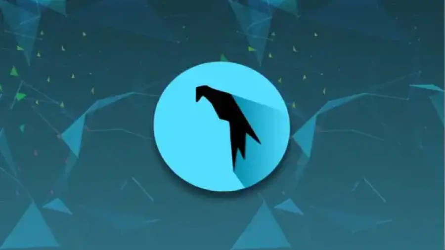

Parrot OS desktop environment preview
Introduction
Built for security learning, labs, and real-world practice
Parrot OS combines a professional Linux base with tools for ethical hacking, forensics, and privacy workflows. This website organizes everything into clean sections so your audience can follow quickly.
Browse By Topic
Page 1
System Overview / History
Who created Parrot OS, what it looks like, and why it still matters.
Open HistoryPage 2
Requirements & Compatibility
CPU support, hardware targets, file systems, GPUs, and connectivity.
Open RequirementsPage 3
Security, Features, Drawbacks
Core capabilities, risks, and what makes Parrot OS strong or limited.
Open SecurityWhat Parrot OS Does
Security Testing
Parrot OS includes tools for penetration testing, scanning, web security checks, and lab-based ethical hacking practice.
Digital Forensics
Useful for investigation workflows like artifact review, file analysis, and incident response learning tasks.
Privacy + Dev Work
Built for privacy-focused workflows while still being practical for coding, scripting, and daily Linux usage.
Parrot OS vs Kali Linux
Where Parrot Is Better
- More privacy-oriented defaults out of the box
- Often lighter feel on lower-spec hardware
- Balanced for both security work and regular desktop use
Where Kali Is Better
- Very widely used in pentest training and teams
- Larger ecosystem of tutorials and community references
- Strong standardization for red-team focused workflows
Quick Choice
Choose Parrot OS for privacy + usability + security tools in one place. Choose Kali Linux when you want the most common pentesting-standard environment.

Final Step
Ready to show installation by platform?
Use the download page to play local installation videos for macOS, Windows, and Linux directly in your website with no external tabs needed.